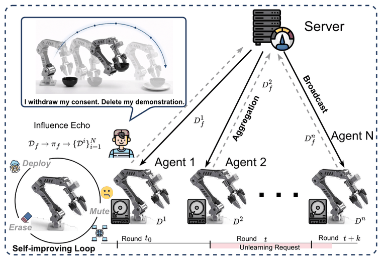
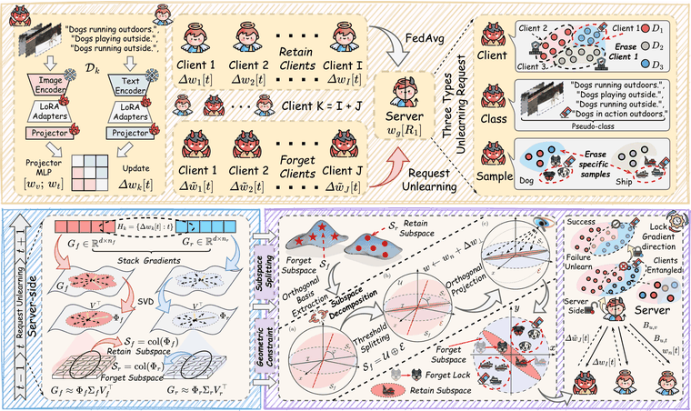
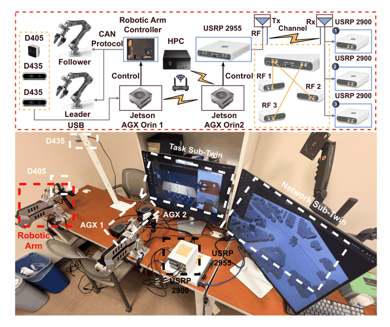
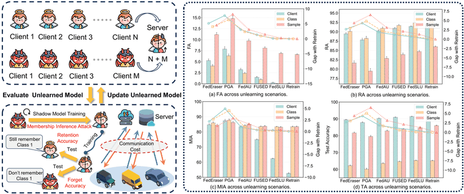
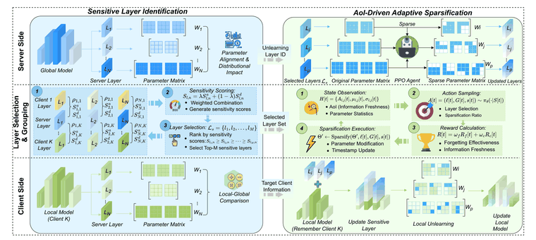

Zihao Ding (丁子豪)
 |
PhD Student, |
About me
Zihao Ding received his B.S. degree in Electronic and Information Engineering from Anhui Normal University, Wuhu, China, in 2025. Currently, he is pursuing his PhD degree in Computer Science at the McComish Department of Electrical Engineering and Computer Science, South Dakota State University, Brookings, USA (Advisor: Prof. Jun Huang). His research interests include Machine Learning, Federated Learning, Federated Unlearning, Computer Networks, Wireless Networks.
News
August 2026: (Journal) Our work “RELIEF: Turning Missing Modalities into Training Acceleration for Federated Learning on Heterogeneous IoT Edge” was accepted by IEEE Internet of Things Journal (IoTJ).
August 2026: (Journal) Our work “PRISM: Exposing and Resolving Spurious Isolation in Federated Multimodal Continual Learning” was accepted by IEEE Transactions on Multimedia (TMM).
June 2026: (Magazine) Our work “Toward Trustworthy Federated Unlearning for Mobile Autonomous Systems” was accepted by IEEE Network.
June 2026: (Journal) Our work “Combating Knowledge Diversity and Catastrophic Forgetting in UAV-Assisted Collaborative Vehicular Learning: A Game-Theoretic Approach” was accepted for publication in ACM Transactions on Autonomous and Adaptive Systems (TAAS).
April 2026: (Conference) Our work “SCALE: Sensitivity-Aware Federated Unlearning with Information Freshness Optimization for Mobile Edge Computing” was accepted by IEEE ICDCS 2026.
March 2026: (Conference) Our work “Securing Smart Agriculture with Communication-Efficient Federated Unlearning” was accepted by IEEE HPSR 2026. Congratulations to Ujjwal!
January 2026: (Journal) Our work “A Review of Continual Learning in Edge AI” was accepted by IEEE Transactions on Network Science and Engineering (TNSE).
December 2025: (Journal) Our work “A Stochastic Geometry-Based Analysis of SWIPT-Assisted Underlaid Device-to-Device Energy Harvesting” was accepted by ACM Applied Computing Review.
November 2025: (Conference) Our work “A Dual-Level Game-Theoretic Approach for Collaborative Learning in UAV-Assisted Heterogeneous Vehicle Networks” won the Best Paper Award at IEEE IPCCC 2025.
November 2025: (Conference) Our work “Learning to Defend: A Multi-Agent Reinforcement Learning Framework for Stackelberg Security Game in Mobile Edge Computing” was accepted by IEEE ICNC 2026.
August 2025: (Conference) Our work “A Dual-Level Game-Theoretic Approach for Collaborative Learning in UAV-Assisted Heterogeneous Vehicle Networks” was accepted by IEEE IPCCC 2025.
Background
South Dakota State University, Brookings, USA (2025 - present)
PhD student, Computer Science
Advisor: Prof. Jun Huang
Anhui Normal University, Wuhu, China (2021 - 2025)
Bachelor of Engineering, Electronic and Information Engineering
First-Author Papers

through the trajectories collected in later rounds. MUTE estimates that downstream influence
from a lightweight server ledger, clears the current residue with a forget–retain update,
and contains high-influence retained trajectories so the echo does not return.

EASE closes each one: bilateral displacement of the visual and language branches,
Cosine–Sine decomposition that isolates forget-exclusive update directions,
and a direction-selective Forget Lock that bounds residual drift across rounds.

compression and terminal participation under per-round deadline and memory limits. TiLP scores
candidate decisions in a cross-domain digital twin — network, training and task sub-twins,
each calibrated at its own time scale — before committing them to the real system.

service down. FedSLU locates the layers that carry the target knowledge by tracking weight
cluster drift, retrains sparsely on retained data, and overwrites those layers with low-rank
updates, while dual pipelines keep learning and unlearning running concurrently.

SCALE works at two levels: historical contribution analysis pinpoints the layers a departing
client shaped most, then adaptive sparsification edits weight subgroups inside them,
trading information freshness against forgetting strength.
Z. Ding, J. Huang, Y. Zhao, Z. Cai, “Combating Knowledge Diversity and Catastrophic Forgetting in UAV-Assisted Collaborative Vehicular Learning: A Game-Theoretic Approach”, ACM Transactions on Autonomous and Adaptive Systems (TAAS), 2026. [PDF]
Z. Ding, J. Huang, J. Qi, “Learning to Defend: A Multi-Agent Reinforcement Learning Framework for Stackelberg Security Game in Mobile Edge Computing”, International Conference on Computing, Networking and Communications (ICNC), 2026. [PDF] | [Code]
Z. Ding, J. Huang, Q. Duan, C. Zhang, Y. Zhao, S. Gu, “A Dual-Level Game-Theoretic Approach for Collaborative Learning in UAV-Assisted Heterogeneous Vehicle Networks”, IPCCC, 2025. (Best Paper Award, 1/34/147, CCF-C) [PDF]
Co-Author Papers
B. Wu, Z. Ding, J. Huang, Y. Zhao, “Forget to Improve: On-Device LLM-Agent Continual Learning via Budget-Curated Memory”, arXiv, 2026. (Preprint) [PDF]
B. Wu, Z. Ding, J. Huang, “RELIEF: Turning Missing Modalities into Training Acceleration for Federated Learning on Heterogeneous IoT Edge”, IEEE Internet of Things Journal, 2026. [PDF]
B. Wu, Z. Ding, J. Huang, “PRISM: Exposing and Resolving Spurious Isolation in Federated Multimodal Continual Learning”, IEEE Transactions on Multimedia, 2026. [PDF]
B. Wu, Z. Ding, J. Huang, “A Review of Continual Learning in Edge AI”, IEEE Transactions on Network Science and Engineering, 2026. [PDF]
C. Xing, Z. Ding, J. Huang, “A Stochastic Geometry-Based Analysis of SWIPT-Assisted Underlaid Device-to-Device Energy Harvesting”, ACM Applied Computing Review, 2025. [PDF]